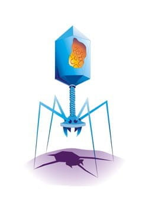

Completa
Si tenemos los vectores \(\vec{u}=(-1,2,2)\) y \(\vec{v}=(2,0,0)\) sabemos que:
Ejercicio
El Extremely Large Telescope (ELT), en el desierto de Atacama, requiere un riguroso mantenimiento automatizado. Para limpiar el polvo sin tocar la delicada capa aluminizada de sus segmentos ópticos, un brazo robótico proyecta chorros de gas a alta presión. Este proceso somete a un punto específico de la montura del espejo a la acción simultánea de cuatro fuerzas concurrentes en el espacio (3D).
Si tienes interés en este tipo de telescopios, puedes ver este vídeo: 
Los ingenieros de la ESO necesitan calcular la fuerza neta o resultante para verificar si el soporte estructural del espejo aguantará la tensión mecánica o si sufrirá una deformación crítica. Supongamos que las cuatro fuerzas medidas en Newtons \(\text{N}\) en un instante del ciclo de limpieza son:
\[\overrightarrow{F_1} = (6, 8, 14) \quad \text{N}\]
\[\overrightarrow{F_2} = (-2, 9, -4) \quad \text{N}\]
\[\overrightarrow{F_3} = (5, -12, 8) \quad \text{N}\]
\[\overrightarrow{F_4} = (6, -9, 12) \quad \text{N}\]
Determina y responde:
-
Fuerza Resultante: Encuentra el vector de la fuerza neta \(\overrightarrow{F_R} = \overrightarrow{F_1} + \overrightarrow{F_2} + \overrightarrow{F_3} + \overrightarrow{F_4}\) que actúa sobre el punto de soporte.
-
Magnitud del impacto: Calcula la magnitud absoluta del vector resultante \(\left(\left|\overrightarrow{F_R}\right|\right)\).
-
Análisis de seguridad: Si los pernos de sujeción del segmento del espejo están diseñados para tolerar una fuerza máxima combinada de \(30\text{ N}\) antes de vencerse, ¿aguantará la estructura del telescopio la operación de limpieza? Justifica matemáticamente tu respuesta comparando la magnitud obtenida con el límite establecido.
Ejercicio
|
Una de las misiones más ambiciosas de la exploración espacial actual es enviar una sonda avanzada hacia el sistema de Saturno para estudiar los océanos subterráneos de sus lunas (como Encélado y Titán) en busca de condiciones de habitabilidad. El vehículo espacial será lanzado desde el Centro Espacial Kennedy en Cabo Cañaveral. Para calcular la trayectoria de escape, los ingenieros deben determinar con precisión el vector de fuerza necesario en el momento de la separación de la etapa superior, asegurando que la nave viaje en la dirección correcta y con la energía justa para entrar en el sistema de Saturno. El equipo de navegación y dinámica orbital ha determinado que el vector de dirección del cohete en el momento del encendido debe ser \(\pmb{\vec{d}= (6, 3, 2)}\). Por otro lado, el equipo de propulsión ha calculado que la fuerza a la que se debe someter el motor en ese instante preciso es de 364 kilonewtons (kN). ¿Puedes ayudarles a calcular el vector de fuerza al que deben someter la etapa del cohete para continuar su viaje? |
Curiosidad
En genética, un vector es un agente que transfiere información genética, por algún tipo de medio, de un organismo a otro. Un vector con el que los científicos experimentan son los plásmidos, con los que es posible insertar genes foráneos en el núcleo de una célula. También se les puede considerar vectores genéticos a todo tipo de virus, puesto que su principal función es insertar información genética en otras células.
 |
Existen distintos campos en los que se emplea el término vector, pero con un significado equivalente:
-
Vector biológico, un agente orgánico que sirve como medio de transmisión.
-
Vector epidemiológico, un organismo capaz de portar y transmitir un agente infeccioso.
-
Vector genético, un agente que porta un gen extraño o modificado.
-
Vector viral, virus modificado que permite introducir material genético exógeno en el núcleo de una célula.
-
Vector de ADN es un organismo que se utiliza para transferir material genético exógeno a otra célula.
-
Vector de datos, un conjunto de variables del mismo tipo cuyo acceso se realiza por índices.
-
Vector de interrupciones, el registro que apunta a la dirección en memoria del gestor de la interrupción.
-
VectorLinux, un sistema operativo, con distribución de GNU/Linux basado en Slackware.
-
Gráfico vectorial, es un dibujo realizado en un programa de diseño gráfico que no se distorsiona independientemente de la medida en que se imprima.